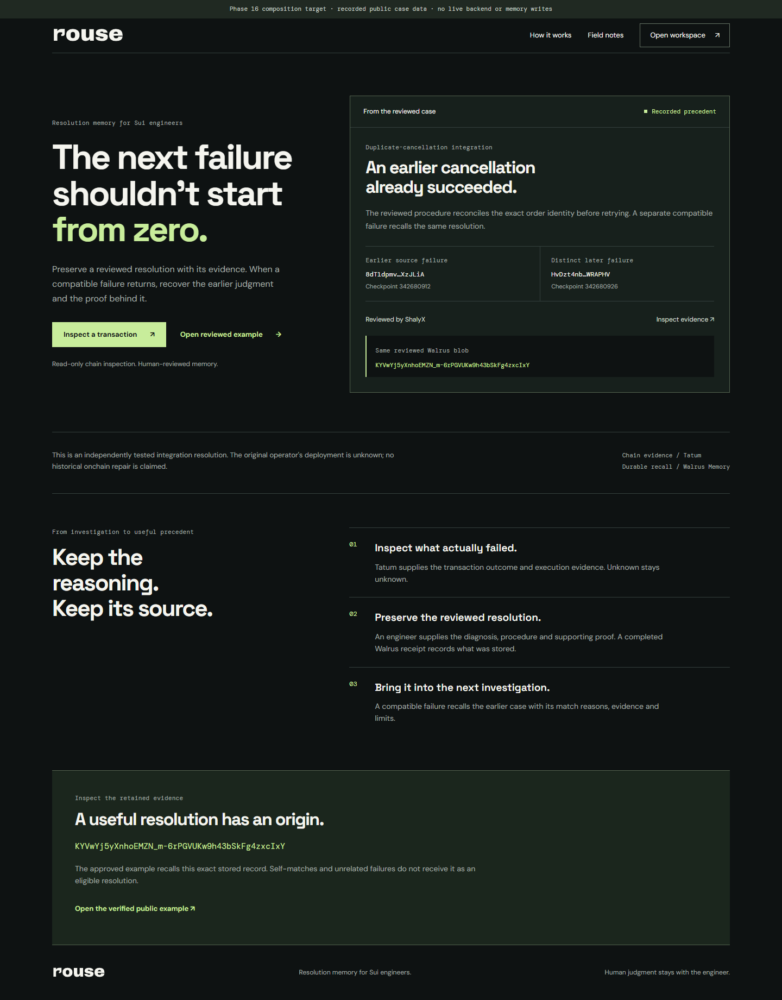
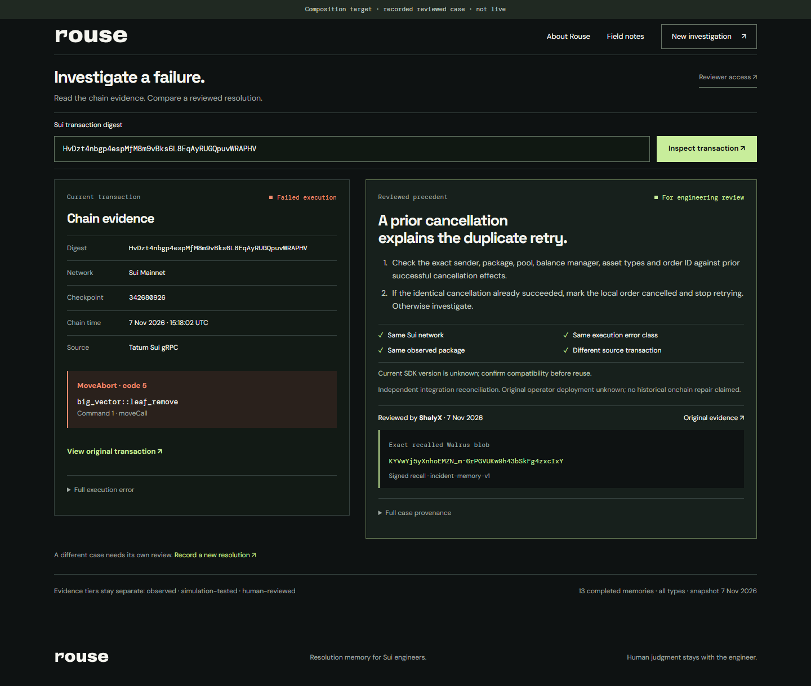
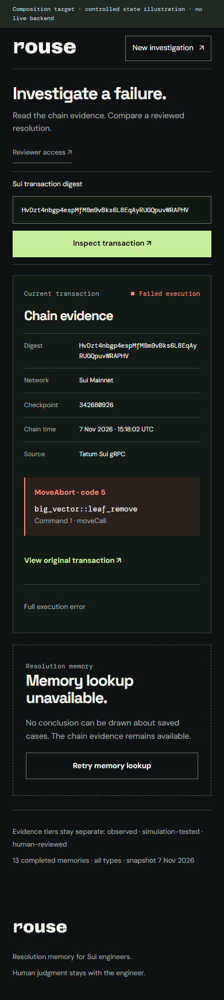
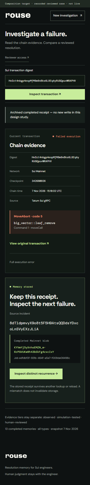
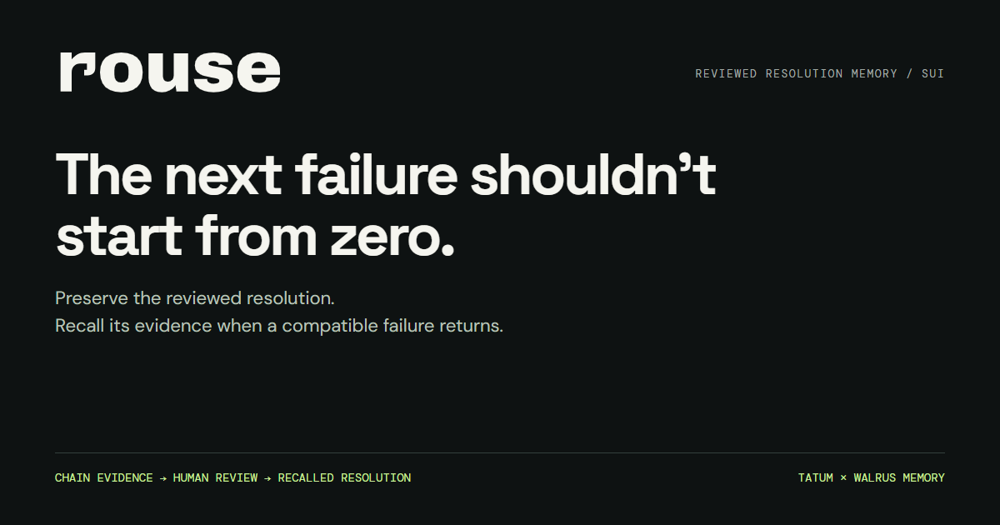

A01 / READY IDENTITY
Global navigation / footer / install icon
Recognize the locked Rouse identity without displacing the task.
- Delivery
- READY
- Fallback
- Plain Rouse text link with accessible name.
A03 / DESIGN TARGET · NOT A LIVE CAPTURE
Landing hero

Show an engineer why an earlier reviewed resolution matters to the current failure.
- Delivery
- IMPLEMENTATION_REQUIRED
- Fallback
- Keep the same case relationship as semantic text; never leave an empty media slot.
A04 / DESIGN TARGET · NOT A LIVE CAPTURE
Workspace: eligible reviewed resolution

Let the engineer assess applicability before acting.
- Delivery
- IMPLEMENTATION_REQUIRED
- Fallback
- Show actual source/procedure/reviewer/blob as text; if recall fails use unavailable state, never a cached eligible result.
A05 / DESIGN TARGET · NOT A LIVE CAPTURE
Workspace: empty / unconfigured / loading / lookup error / success / unknown / no match / unavailable

Make the next action clear without implying evidence that is absent.
- Delivery
- IMPLEMENTATION_REQUIRED
- Fallback
- Plain status text and available next action. Loading can use static wording.
A06 / DESIGN TARGET · NOT A LIVE CAPTURE
Protected review / pending / completed receipt

Show what the human approved and whether storage actually completed.
- Delivery
- IMPLEMENTATION_REQUIRED
- Fallback
- Readable status plus job identifier; completed receipt only after confirmed job. No image-only receipt.
A07 / DESIGN TARGET · NOT A LIVE CAPTURE
Case proof / field notes / judge evidence link

Allow an independent reader to inspect the original evidence and the scope of the correction.
- Delivery
- CAPTURE_AFTER_INTEGRATION
- Fallback
- Link to immutable case commit and structured evidence with readable description.
A08 / READY IDENTITY
External share preview / hackathon listing

Make Rouse recognizable before the app opens.
- Delivery
- READY
- Fallback
- Platform title and description in text.